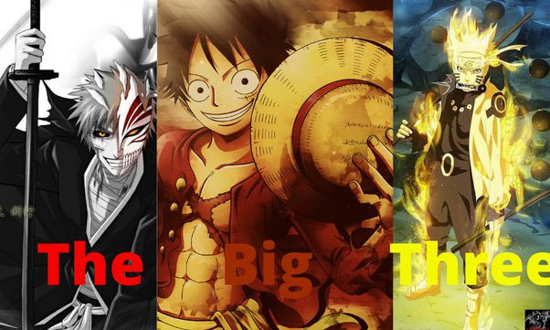

What are the Big 3
 In this sense the Big 3 is term used for the most popular anime during thier golden time. The titles for These are One Pice, Bleach, and Naruto. now a lot of people wonder why Dragon Ball Z was not in The Big Three. And that is because all three of those shows came out around the same time. And Dragon Ball came out way before any one of those. And every now and the some people say that they should have named it The Big 4 so Dragon Ball can be added but many people disagree and say we should just keep the Originals.